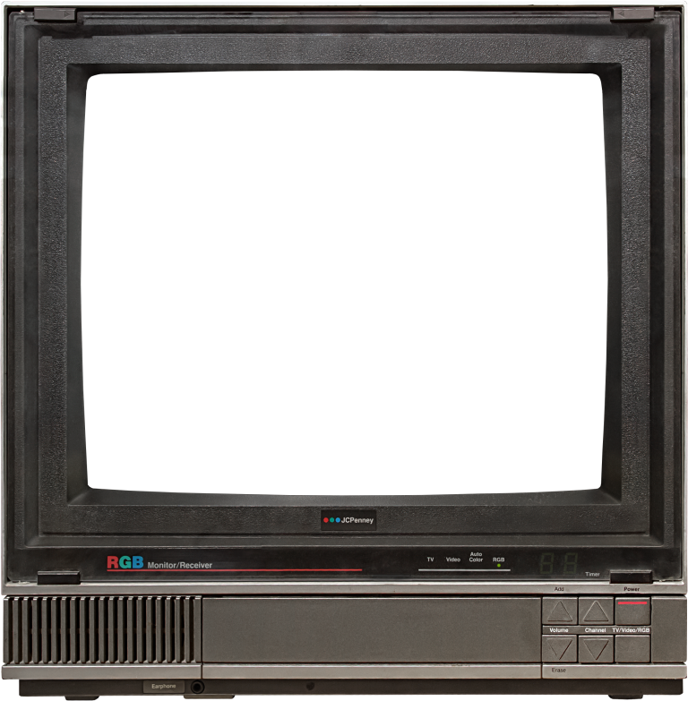
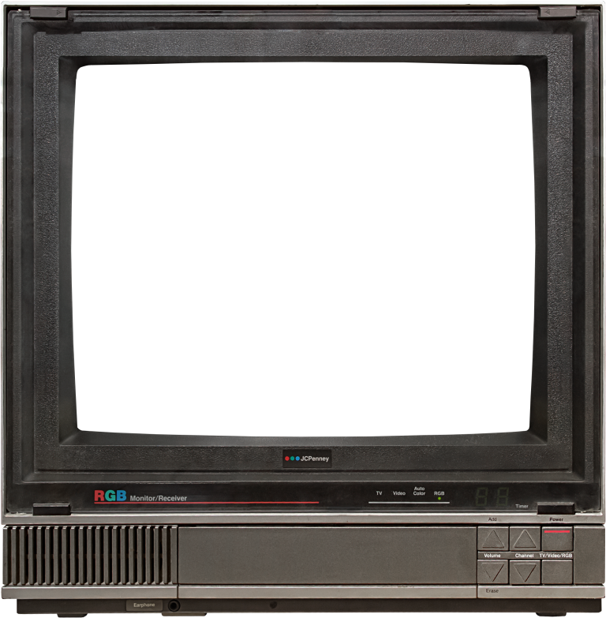
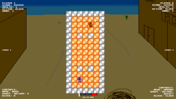

NO TAPE SELECTED
To view a section, select a VHS tape beside the TV screen. You can also eject the tape to view this message again using the eject button below the screen to the left.
ABOUT THIS SITE
To build a solid foundation of the fundementals of web development, I developed this site using the
vanilla technologies HTML, CSS, and JavaScript. This is also done to minimize maintenance and maximize
compatibility. I also focused on making the website quick and responsive by containing as much
information as possible in one page.
As you can likely tell, the look of this site was inspired by old electronics from the 80s onwards.
This website is currently under development and will be added to over time as more projects become
complete.
WORK HISTORY
Software Engineer InternRipon, WI
- I will fill this in after the internship ends :)
Student Academic Mentor
Houghton, MI
- Co-leader managing weekly mentoring sessions teaching college students Data Structures & Algorithms
- Broke attendance records of 20+ students by encouraging participation
- Attendees of mentoring sessions had an average exam score 8% higher than the class average.
Camp Counselor
Chelsea, MI
- Managed and entertained a large group of K-5 aged children for after-school and summer camp programs
- Facilitated events and field trips while maintaining order and safety
MISCELLANEOUS AND UNFINISHED PROJECTS
Apeshot
Most recent build (Windows)
Online arena FPS game. Under construction.
Machine Shop Check-In
Developed Spring 2025
During my time at HIDE, I worked as a back-end developer on a
website designed to streamline the process of using machine shop located in the Minerals and Materials
Engineering Building for engineering students and staff alike.
The project largely used the Python back-end Flask and used a SQLite database. I joined the project
partway through and took over the work of a student who had left the enterprise, so I dealt with a lot
of legacy code. My work included the development of the admin dashboard for staff, connecting front-end
forms to communicate with the database on the back-end, and working with Google's authentication service
to allow students to use their school account.
Wild West Waltz (formerly Rhythm Cowboy)
Developed Throughout Late 2024
 GitHub
GitHub
 Itch.io
Itch.io
Developed using Unity, Wild West Waltz is a 2-player rhythm game about dueling cowboys who can only act when "draw" is called by the metronome (or on other beats to reward good timing). What exists now is ultimately just a prototype that I might return to one day. I began this game after I launched Squigley and started with the objective of having more readable, reusable, and overall better code.
Macro King
Actively Developed: October 2024 - December 2024
GitHub
Macro King is a nutrition and fitness tracking app that was developed by me and five others for my
school's course Team Software Project. It was developed using Unity and C# because two of the
team members were familiar with it, but in hindsight I wish we used Android Studio or something more
focused on developing UI for mobile. Many members weren't familiar with C#, so I was often the acting
lead and trying to catch people up to speed.
To collaborate, we used GitHub and Jira. We also utilized Scrum methodologies throughout the project.
SQUIGLEY
Actively Developed: August 2023 - August 2024
GitHub
 Steam (Play for free!)
Steam (Play for free!)
Summary
Squigley is a platforming game where you explore a massive 2D world, overcoming difficult obstacles using unique movement mechanics. The game was launched on Steam in August of 2024 after a year in development.
Developing Squigley
Technologies used: C#, Unity
I've developed Squigley during my first year in college. It started out as a very simple
project to tinker around with Unity. It uses C#, which is a very similar language to Java, which I was
currently taking
and intro class for. As I was just learning how to program, there's a lot of atrocities in this
codebase. Look closely
at the GitHub repo and you can probably spot a good few flaws. I got better at programming as the
project went on, but
making the game taught me many pitfalls to avoid through firsthand experience.
Though I didn't have much experience with video game art and music at the time, I created all of the art
and most of the
music on my own. The only exception to this was the "true-ending" credits song "Cattails", which I
recorded with some of
my high school friends that I was in a band with. I did this because I wanted the game to have a
cohesive art-style.
Though it was all very ametuer, I was happy with the result.
After launch, the game recieved a few updates to address user feedback and bug fixes. The game was
obviously not a huge
success, but I wanted to make it as complete and as good as possible. The game went free-to-play in
January of 2025.
SHORTY SHOOTERS
Actively Developed: September 2024 - December 2024
GitHub
Itch.io
Play online!
Summary

The little guys are bringing out the big guns.
Shorty Shooters is an online multiplayer 2-Dimensional shooter game. The objective is to get the most kills by staying in the ring and shooting your opponent while they're vulnerable. Where the game shines is its unique movement mechanics, where you can use the gun's recoil in order to launch yourself further.
Developing Shorty Shooters
Technologies Used: Godot, GDScript
Shorty Shooters was developed as a part of Husky Game Development,
an organization at Michigan Technological University. The project took place over the course of one
semester, as many of the six group members didn't have space in their schedules to continue with the
project. I contributed mostly to programming the core gameplay loop and refining basic features like
movement and shooting, while also doing some of the environmental art and character spritework. In this
project, you can see the progress I've made in programming, game design, and pixel art since Squigley.
Our team developed Shorty Shooters while using agile methodologies and would document the process of
development every two-week sprint.
Work Sample
Some updates have been made since the end of the semester the game was created, but all team members
have moved on to work on other projects. You can download the game for free on itch.io if you'd like to try it out.
Credits
Developers
Nolan Casey
Matthew Echols
Jay Hawkins
Nicholas Minor
Caleb
Werdon
Thomas Wilkins
Art
Matthew Echols
Jay
Hawkins
Sound
Music by Zach Brouckman
Me
 (I'm the one on the left)
(I'm the one on the left)
Education
Michigan Technological University
Houghton, MI
August 2023 - April 2027
GPA: 3.87 / 4.00
B.S. in Computer Science
Minor in Sound
Relevant Coursework:
- Data Structures & Algorithms
- Discrete Structures
- Programming at a Hardware/Software Interface
- Computer Organization
- Intro to Databases
- Formal Models of Computing
About Jakob "Jay" Hawkins
I am currently a computer science student at Michigan Technological University expecting to graduate in
2027. I was born in Ann Arbor, MI and grew up in the area until I graduated high school in 2023.
As of writing this, I have an internship lined up for Summer 2025, but I am always looking for new
opportunities, so get in touch!
Some other things about me: I've played bass and guitar for a while and was a part of two rock bands and
I occasionally record some music. I also enjoy weight lifting and skateboarding and have also been
getting into snowboarding this past winter.
Skills
Languages and Frameworks:
- C/C++
- JUCE
- C#
- Unity API
- Python
- Flask
- JavaScript
- Node
- React
- SQL
- MySQL
- SQLite
- PostgreSQL
- Java
Software
- Linux (Debian Based)
- VSCode
- Git